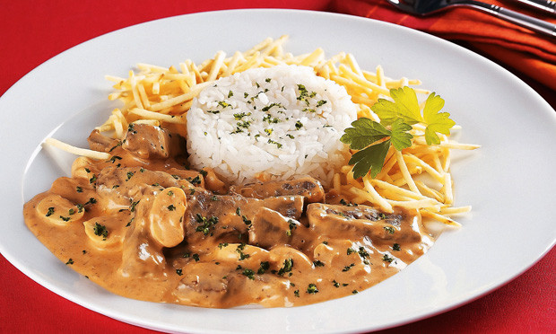

Strogonoff de Carne
Ingredientes
- 500 gramas de alcatra cortada em tirinhas
- 1 unidade de cebola picada
- 1 colher (sobremesa) de mostarda
- 1 colher (sopa) de ketchup (ou catchup)
- 1 pitada de pimenta-do-reino
- 1 unidade de tomate sem pele picado
- 1 xícara (chá) de cogumelo variado | variados escorridos
- 1 lata de creme de leite
Sal a gosto
Modo de Preparo
- Derreta a manteiga e refogue a cebola até ficar transparente
- Junte a carne e tempere com o sal
- Mexa até a carne dourar de todos os lados
- Acrescente a mostarda, o catchup, a pimenta-do-reino e o tomate picado
- Cozinhe até formar um molho espesso
- Se necessário, adicione água quente aos poucos
- Quando o molho estiver encorpado e a carne macia, adicione os cogumelos e o creme de leite
- Mexa por 1 minuto e retire do fogo
- Sirva imediatamente, acompanhado de arroz e batata palha
- Dica: Se juntar água ao refogar a carne, frite-a até todo o líquido evaporar.

Voltar para tela inicial